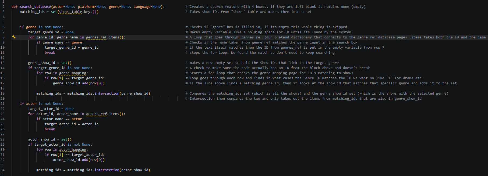
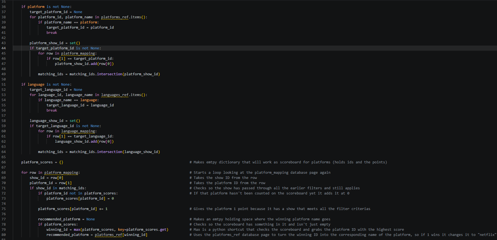
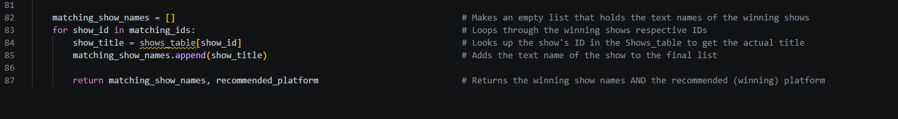

The Fantastic Potatoes Algorithm
We all struggle to find a good series sometimes, even thou we have countless streaming services, it often feels surprisingly difficult to find something that fits our mood, the interest right now or the kind of story we want at the moment.
This frustration became the foundation of our project. Our algorithm helps users find the streaming platform that best matches their personal preferences. It does this by checking four criteria the user selects: language, actor, genre, and platform.
Our algorithm is built using a simulated database connection. Instead of connecting to a real external database, we work with structured Python dictionaries and mapping tables that act as a database. This allows us to demonstrate how a real search system would work with filtering shows, matching attributes and recommending platforms. The logic and structure mirror how a real connector would behave, making the algorithm easy to understand and expand.
Our algorithm is based on sequential filtering using set intersections. This method fits our dataset well because each attribute is stored in a separate reference table and connected through mapping tables. The structure makes it easy to combine multiple user preferences and narrow down the list of matching shows step by step. It also allows the algorithm to evaluate which streaming platform offers the most relevant content.
The data model was constructed to support this process: by separating shows, attributes and relationships into clear tables, the algorithm can efficiently look up IDs and handle platform scores. This creates a flexible and scalable system that can be expanded with more criteria in the future while still remaining easy to understand and maintain.
Here you can see our code in Python
With additional notes for each row


